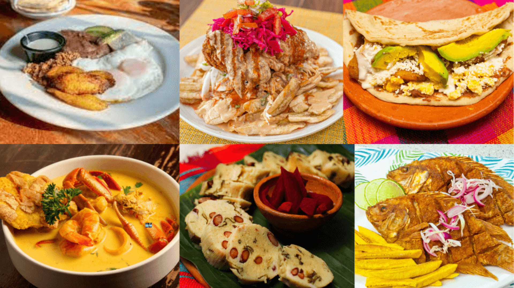

Recetas sencillas de casa
Platos típicos de Honduras explicados paso a paso, con ingredientes que se consiguen en cualquier mercado o supermercado.
Recetas
Cinco platos tradicionales: haga clic en el nombre para ver los ingredientes y la preparación.
20 minutos
4 porciones
Fácil
Ingredientes
- 4 tortillas de harina
- 1 taza de frijoles rojos fritos
- 1/2 taza de queso seco rallado
- 1/2 taza de mantequilla (crema)
Preparación
- Caliente las tortillas en un sartén seco por ambos lados.
- Unte los frijoles fritos sobre cada tortilla.
- Agregue el queso rallado y la mantequilla.
- Doble la tortilla por la mitad y sirva caliente.
40 minutos
6 porciones
Media
Ingredientes
- 6 rebanadas gruesas de pan del día anterior
- 3 huevos (claras y yemas separadas)
- Aceite para freír
- 1 taza de panela raspada
- 2 tazas de agua
- 1 rajita de canela
- 3 clavos de olor
- 1/4 taza de pasas (opcional)
Preparación
- Hierva el agua con la panela, la canela y los clavos por unos 15 minutos para hacer la miel.
- Bata las claras a punto de nieve y agregue las yemas con cuidado.
- Pase cada rebanada de pan por la mezcla de huevo.
- Fría las rebanadas en aceite caliente hasta que estén doradas por ambos lados y escúrralas.
- Coloque las torrejas en la miel con las pasas y cocine a fuego bajo unos 5 minutos.
- Deje reposar y sirva tibias o frías.
30 minutos
4 porciones
Fácil
Ingredientes
- 1 taza de maíz tostado molido
- 4 tazas de agua
- 1 rajita de canela
- 2 clavos de olor
- 1/2 taza de panela raspada (o azúcar)
- 1 pizca de sal
Preparación
- Disuelva el maíz tostado molido en 1 taza de agua fría.
- Hierva las otras 3 tazas de agua con la canela y los clavos por 5 minutos.
- Agregue el maíz disuelto colándolo y mueva sin parar para que no se formen grumos.
- Cocine de 10 a 15 minutos hasta que espese un poco.
- Endulce con la panela y la sal, y sirva caliente.
3 horas
8 porciones
Difícil
Ingredientes
- 2 libras de masa de maíz
- 1/2 taza de manteca de cerdo (o aceite)
- 2 tazas de caldo de pollo o cerdo
- 1 cucharada de achiote disuelto en un poco de caldo
- 1 libra de carne de cerdo o pollo en trozos
- 1/2 taza de arroz remojado 30 minutos
- 2 papas en rodajas
- 2 tomates y 1 cebolla en rodajas
- 1 chile dulce en tiras
- Hojas de plátano pasadas por el fuego e hilo
- Sal al gusto
Preparación
- Sazone la carne con sal y cocínela en un poco de agua hasta que esté casi lista.
- Mezcle la masa con la manteca, el caldo, el achiote y la sal hasta que quede suave y sin grumos.
- Extienda una porción de masa sobre cada hoja de plátano.
- Ponga encima un trozo de carne, un poco de arroz, papa, tomate, cebolla y chile.
- Cubra con un poco más de masa, doble la hoja y amarre el paquete con hilo.
- Cocine los nacatamales en una olla grande con agua caliente, tapados, por unas 2 horas.
- Deje reposar unos minutos y sirva calientes.
40 minutos
4 porciones
Media
Ingredientes
- 8 tostadas de maíz (tortillas fritas)
- 1/2 libra de carne molida de res
- 1/2 cebolla y 1 chile dulce picados
- 2 tomates picados
- 1 taza de repollo picado fino
- 1/2 taza de queso seco rallado
- 2 huevos duros en rodajas
- Salsa de tomate
- Sal y pimienta al gusto
Preparación
- Cocine la cebolla, el chile y los tomates en un sartén con un poco de aceite.
- Agregue la carne molida, sal y pimienta, y cocine hasta que esté lista.
- Coloque las tostadas en un plato y ponga la carne encima.
- Agregue el repollo, la salsa de tomate y el huevo en rodajas.
- Termine con el queso rallado y sirva de inmediato.
Consejos de cocina
Tres ideas básicas para que las recetas le salgan mejor.
Antes de cocinar
- Lea la receta completa
- Lave bien los ingredientes
- Corte y mida todo antes de encender la estufa
Mientras cocina
- Agregue la sal poco a poco
- Pruebe antes de servir
- Fría a fuego medio y con cuidado
Al servir
- Sirva caliente lo que se come caliente
- Escurra lo frito sobre papel absorbente
- Deje reposar las masas unos minutos